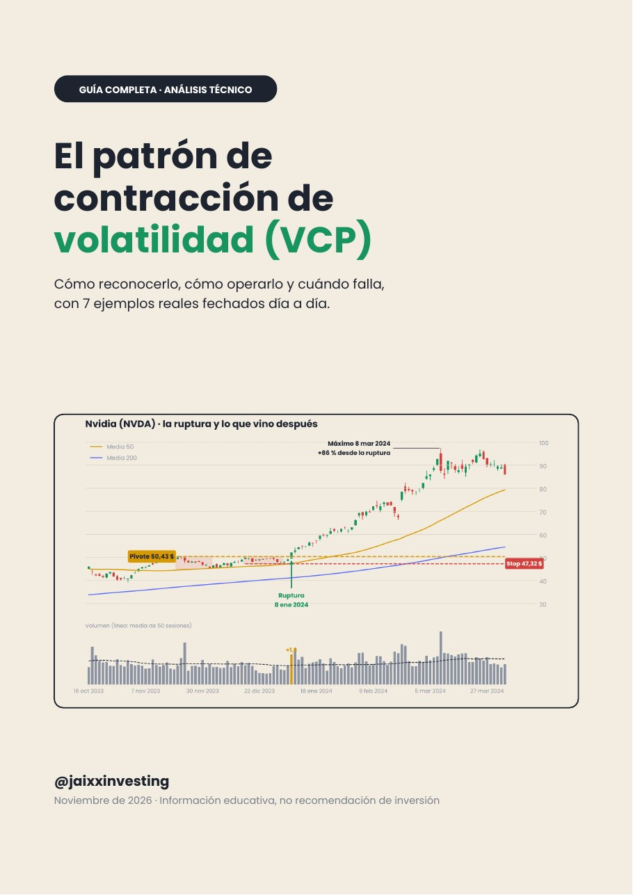

Biblioteca
Guías de inversión con ejemplos reales
Cada guía explica un concepto de los vídeos con más detalle: qué es, cómo se usa, cuándo falla y ejemplos con fecha y cifras. Todas son gratuitas y se descargan en PDF.

Análisis técnico · PDF
Cómo leer el volumen y usarlo para operar
4 estrategias, 10 años de datos y 9 ejemplos reales.

Análisis técnico · PDF
El patrón de contracción de volatilidad (VCP)
Cómo reconocerlo, operarlo y cuándo falla, con 7 ejemplos reales.
Próximamente,
nuevas guías
nuevas guías